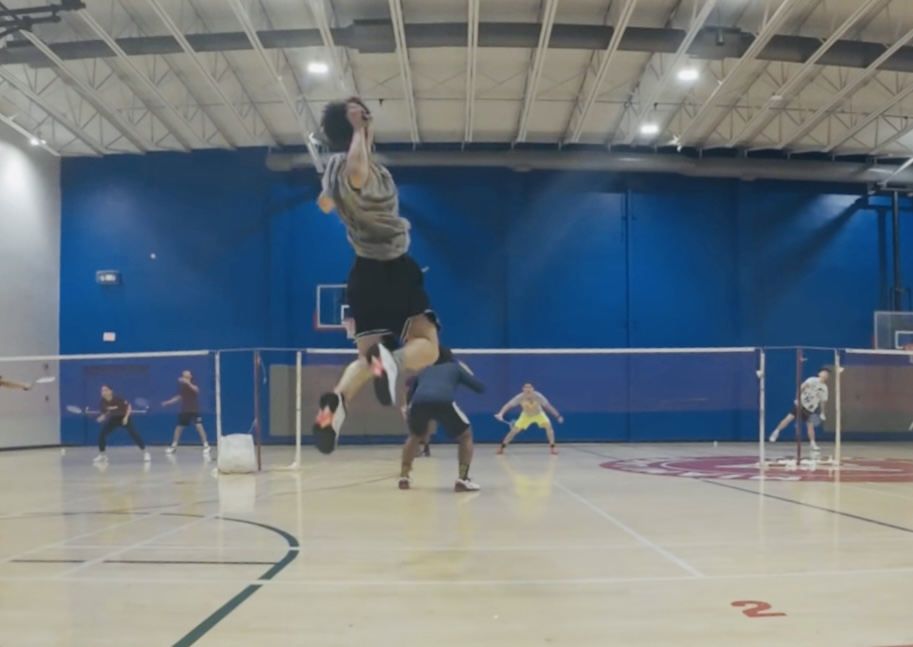
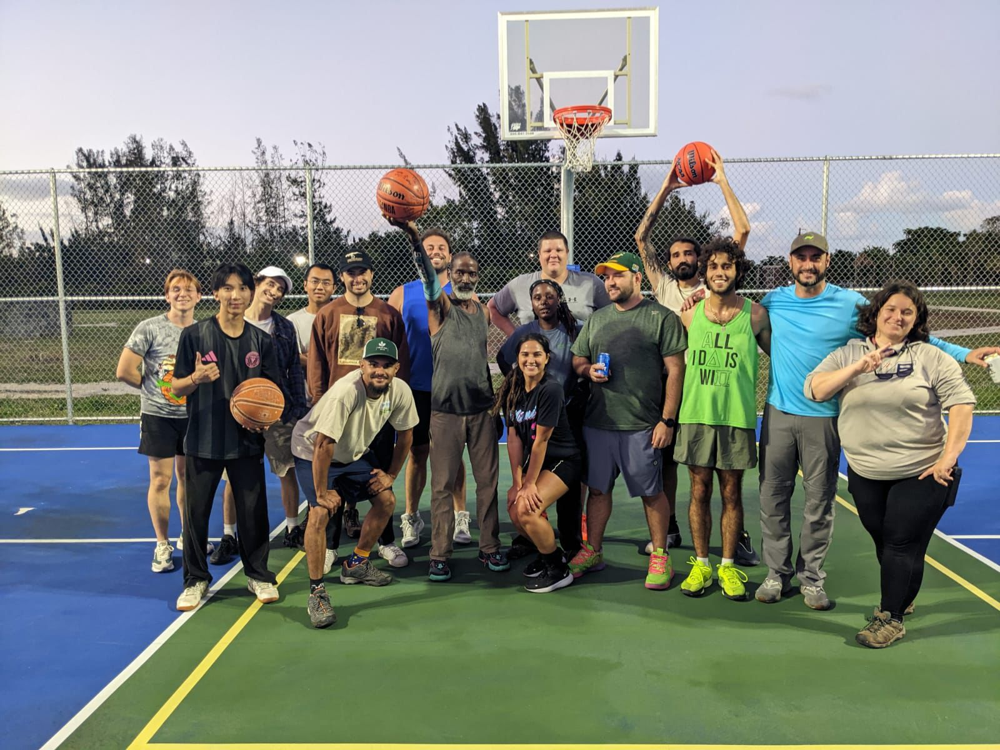
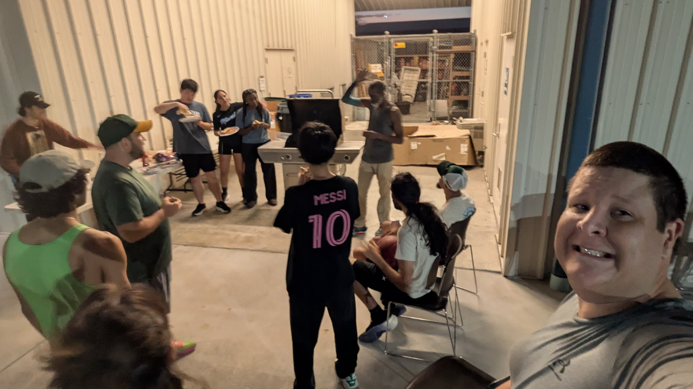

About
Beyond Academics
Outside of academics, Fred enjoys sports, outdoor activities, and exploring the natural world.
Badminton

Badminton is Fred's strongest and most competitive sport. He previously served as the captain of his college badminton team and has received several university-level awards, including first, second, and third place honors in badminton competitions.
Basketball

Fred also enjoys playing basketball. At the University of Florida, he regularly plays basketball with friends and colleagues at the research center. In daily life, he also follows different basketball leagues and enjoys watching games.
Football and Table Tennis

Fred also plays football and has recently started developing his interest in table tennis. These sports provide a balance to research life and help him stay active and connected with friends.
Outdoor Activities


Beyond sports, Fred enjoys outdoor activities such as hiking, nature observation, and herping.